load(file = "CHC9012_PCIbexDataPrepared.RData")
library(ez)
library(dplyr)
library(Rmisc)Week 13 - Exploring the data
Overview
This week, we will learn how to explore our results file.
Explore your results:
- Preprocessing: How to identify outliers to have a clean dataset?
- Analyses: How to look at the results based on the experimental design?
- Explorations: How to check unexpected results?
A brief summary of this week’s new functions:
plot(): Generates scatter plots and boxplots.length(): Returns the number of elements or items in a vector or factor level.subset(): Filters a data frame to return only the rows or columns that meet specific conditions.c(): Combine/Concatenate function; used here to group column names into a vector.unique(): Removes duplicate rows or elements from an object.table(): Creates contingency tables to show the counts/frequencies of factor levels.aggregate(): Splits data into subsets and computes summary statistics (used to find the mean reaction time per participant).droplevels(): Drops unused levels from a factor variable, usually after subsetting data.ave(): Computes sub-group statistics (like group means or standard deviations) and returns a vector matching the original data length.sd(): Calculates the standard deviation of a set of numbers.nrow(): Counts the total number of rows in a data frame.as.data.frame(): Converts an object (like a table) into a standard data frame format.summarySE(): Gives a summary of the data (count, mean, SD, SE) based on several values.
Please complete the following tasks before our next meeting:
👀 Part 1: Have an overview of the results
🤔 Why it is a good idea to have an overall view of results
Even if we have an idea of what the results may look like based on our hypotheses, we should never forget that we are dealing with human behavior, and that something unexpected can happen. While our observations can (and should) be driven by our hypotheses, we need to keep an open mind!
First, we need to load the data that we have already prepared last week, in addition to the two necessary libraries:
We are digging into different ways to have a first idea of the results below:
- Overall results based on the experimental design
- Overall results by participant
- Overall results by item
- How to look at the background of the participants
- We can have a first look at the ratings by condition:
plot(data3$Value ~ data3$Condition)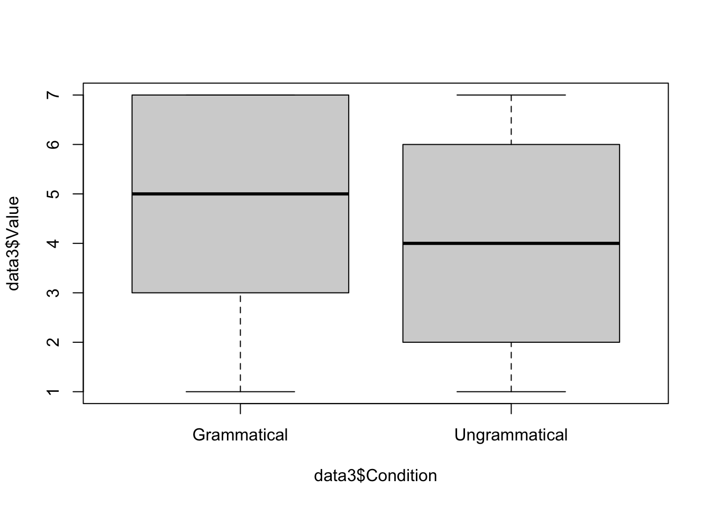
The plot() function gives us a boxplot.
How to read it?
- Thick horizontal line: This is the median, indicating the mean rating.
- Grey boxes: This is the interquartile range, indicating where the middle 50% of the ratings are.
- Dashed lines: These are the whiskers, indicating scores outside the middle 50%.
The median ratings for Grammatical sentences is 5, and for Ungrammatical sentences 4. We would expect a wider difference, and this suggests that there is something happening with our data.
- We can also look at the RT by condition:
plot(data3$RT ~ data3$Condition)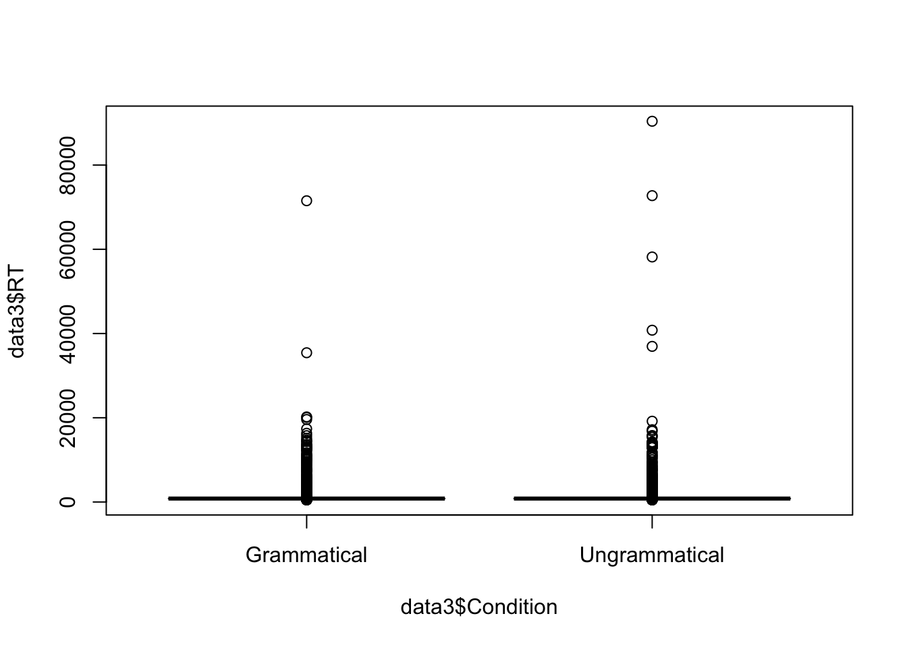
Can you see the dots? These are the outlier trials. We cannot see a clear pattern because of them. We can decide not to plot the outliers by specifying it as below:
plot(data3$RT ~ data3$Condition, outline = FALSE)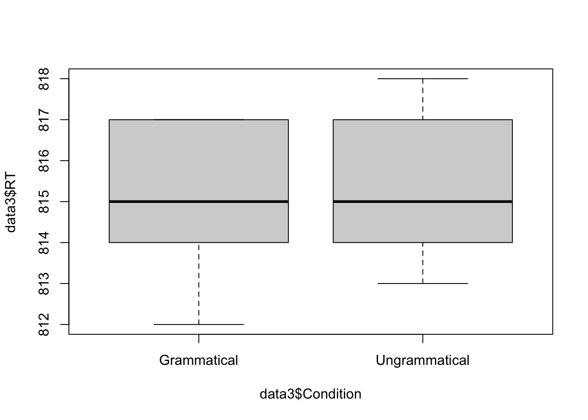
We cannot see great differences between the conditions.
Did you see that?
Did you remark the y axis (on the left)? This indicates that the participants took around 800 milliseconds to judge the sentences, which is quite strange. Again, this suggests that there is something weird happening with our dataset.
We can look at the overall results for each participants using the same plot() function:
- Here are the judgments by each participant. We can see that there is variation, but this is often seen in acceptability judgment experiments.
plot(data3$Value ~ data3$ID_1_TimeReceived)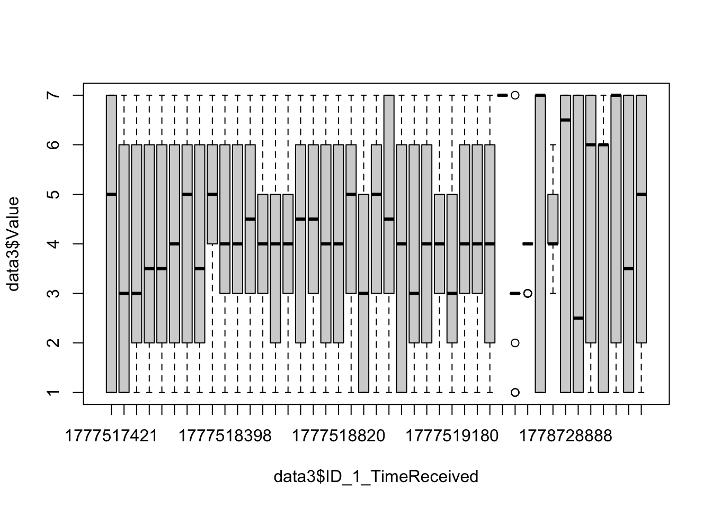
- Here is the reaction time by each participant.
plot(data3$RT ~ data3$ID_1_TimeReceived, outline = FALSE)
Did you see that?
It is visually clear that there are two types of participants: (1) One group read and judged the sentences very quickly, spending the same anount of time for each sentence, and this is quite suspicious, (2) another group that took more time, and they took different amount of time to read and judge each sentence. This is a human-like behavior.
Do you remember the problem with y axis when looking at the overall pattern? Now we know where it comes from. We are dealing with a group of participants with a weird behavior (hint: these are the data from an AI robot).
- Here are the judgments by each item. Again, there is variation in the results, but this is often seen in acceptability judgment experiments.
plot(data3$Value ~ data3$ItemNo)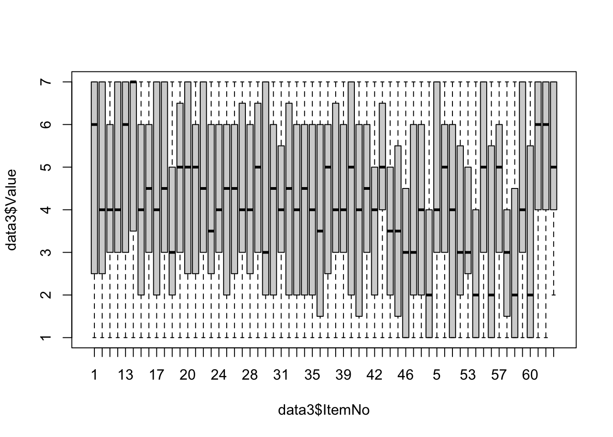
- Here is the reaction time by each participant. Some items were judged very quickly, but this is surely driven by the weird group of participants.
plot(data3$RT ~ data3$ItemNo, outline = FALSE)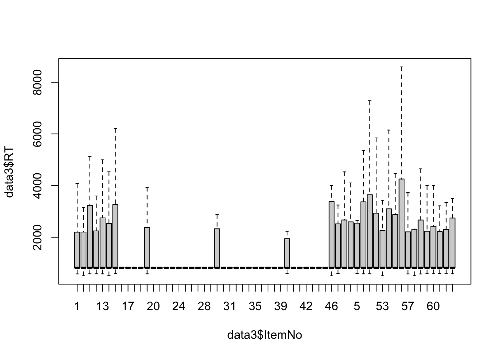
Finally, we would like to have more information about the participants themselves:
- Here is the code to obtain the number of participants:
## Number of participants
length(levels(data3$ID_1_TimeReceived))[1] 43- Here is the code to obtain the information about the age of the participants:
## Age of participants
summary(data3$UserAge) Min. 1st Qu. Median Mean 3rd Qu. Max.
19.00 23.00 30.00 35.12 49.00 65.00 - Here is the code to obtain the summary table of the highest level of education of the participants:
## Degree of participants
DegreePart <- subset(data3, select = c(ID_1_TimeReceived, UserDegree))
DegreePart <- unique(DegreePart)
table(DegreePart$UserDegree)
BA High school MA Ph.D.
14 7 13 9 🤯 Part 2: Identify and remove outliers
2.1. Identify and remove non-valid participants
Thanks to our first overview of the results, we know that the data from some participants are not valid. In this part, we will see how to identify and remove their data.
⚠️ Be careful
We need to be careful when removing data, especially not to remove too much! The challenge is that there is no absolute established rule. We will see in the following sections that we need to rely on converging evidence to be more confident and justify our choice.
We can use different types of evidence to identify non-valid participants:
- Based on abnormal mean reaction time,
- Based on shared IPs (shared device),
- Based on the observation of specific participants.
Let’s have a look one more time at the plot indicating that there are RT problems.
plot(data3$RT ~ data3$ID_1_TimeReceived, outline = FALSE)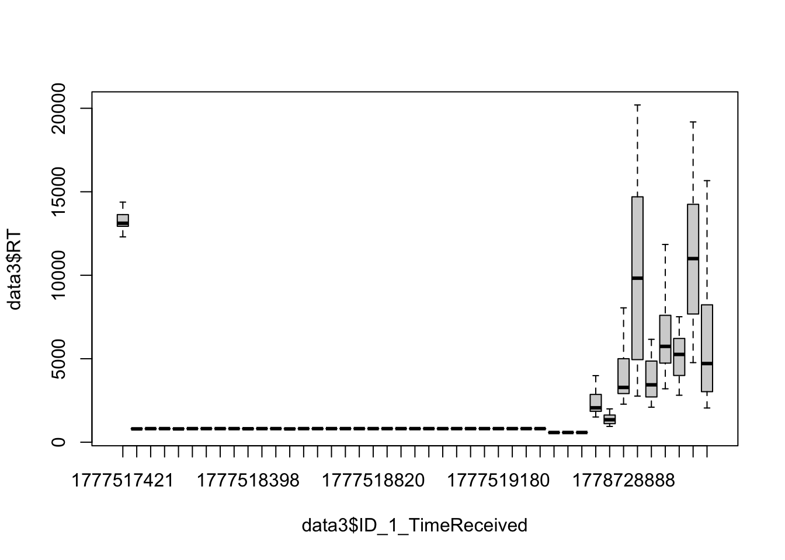
To have a more precise idea, we can look at the mean RT by participant.
PartMeanRT <- aggregate(RT ~ ID_1_TimeReceived,
data = data3,
FUN = mean)
print(PartMeanRT) ID_1_TimeReceived RT
1 1777517421 13571.0667
2 1777518106 805.1000
3 1777518142 808.9333
4 1777518178 808.5000
5 1777518214 806.3333
6 1777518250 813.2667
7 1777518286 811.7333
8 1777518322 814.4333
9 1777518359 811.2667
10 1777518398 806.8333
11 1777518439 814.5000
12 1777518549 813.5333
13 1777518588 805.7000
14 1777518627 812.1333
15 1777518665 810.1333
16 1777518704 815.0000
17 1777518742 812.1667
18 1777518781 815.3000
19 1777518820 812.9667
20 1777518859 814.9333
21 1777518898 814.5000
22 1777518937 810.2000
23 1777518975 812.4000
24 1777519013 807.5333
25 1777519052 814.6333
26 1777519104 813.5667
27 1777519142 815.1667
28 1777519180 813.4333
29 1777519233 814.9333
30 1777519270 814.8667
31 1777519304 807.6333
32 1777519458 608.8667
33 1777519500 815.4667
34 1777519539 692.3667
35 1777519798 8069.6667
36 1777952741 1511.9667
37 1778728888 3986.5667
38 1778729203 14339.8000
39 1778730554 4272.8333
40 1778737433 6259.6333
41 1778742733 5526.1333
42 1778763194 11567.2667
43 1778782660 6250.8000This confirms that there are many participants whose mean RT is around 800 milliseconds. Let’s have a closer look at this group using the following code.
data_QuickPart <- subset(PartMeanRT, RT < 1000)
data_QuickPart_FullData <- subset(data3,
ID_1_TimeReceived %in% data_QuickPart$ID_1_TimeReceived)
plot(data_QuickPart_FullData$RT ~ data_QuickPart_FullData$ID_1_TimeReceived, outline = FALSE)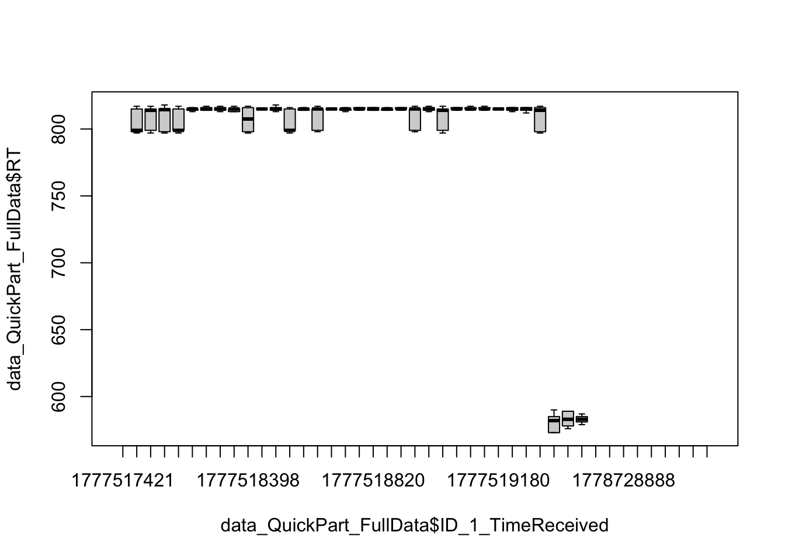
The fact that the variation is so small is very suspicious. It means that the participants were precise enough to judge the sentences very quickly and at the same rate. To me, this suggests that the participants were just pressing one or two buttons on the keyboard to finish the experiment as quickly as possible.
Therefore, we can expect that these participants did not give very different ratings when comparing Grammatical and Ungrammatical conditions. Let’s have a look at this.
plot(data_QuickPart_FullData$Value ~ data_QuickPart_FullData$Condition)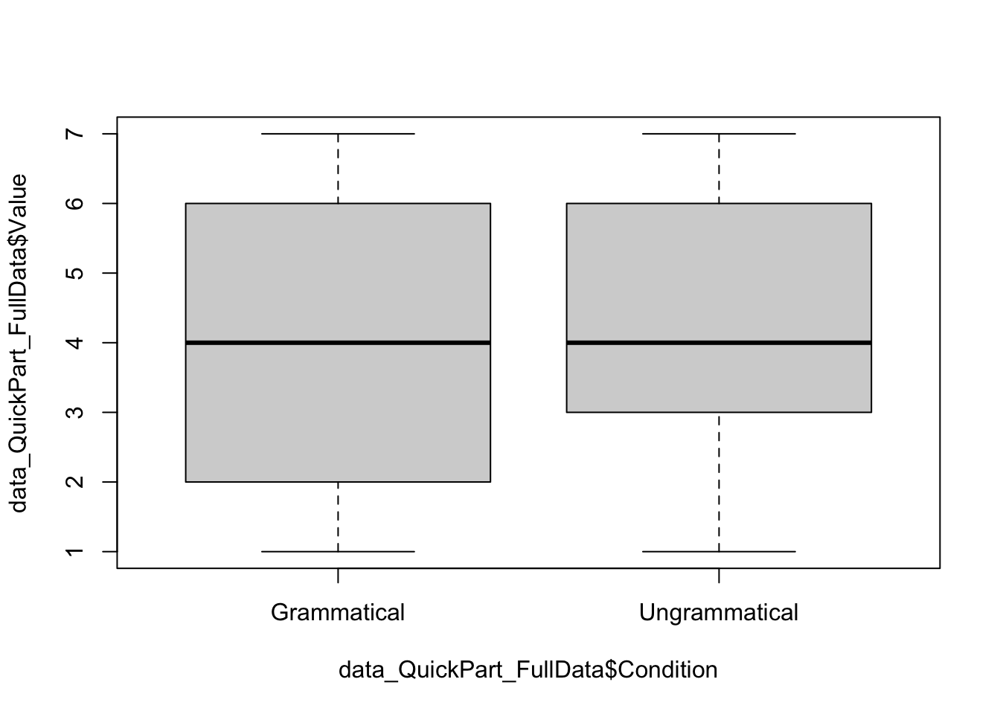
To make sure that we are not removing too much, we can have a look at the other group:
data_OtherPart <- subset(PartMeanRT, RT > 1000)
data_OtherPart_FullData <- droplevels(subset(data3,
ID_1_TimeReceived %in% data_OtherPart$ID_1_TimeReceived))
plot(data_OtherPart_FullData$RT ~ data_OtherPart_FullData$ID_1_TimeReceived, outline = FALSE)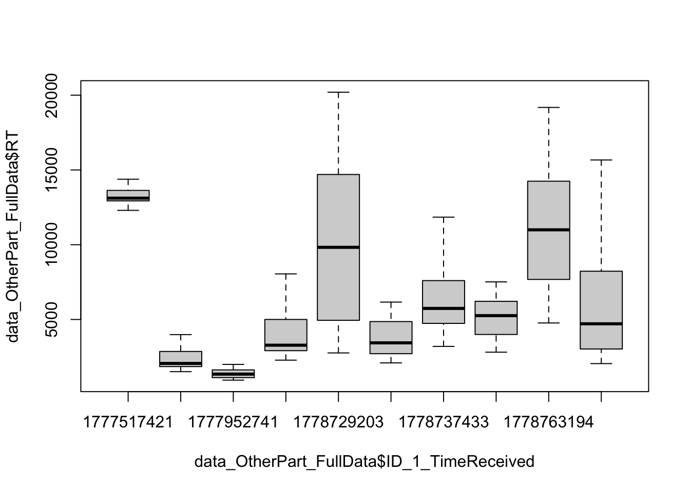
plot(data_OtherPart_FullData$Value ~ data_OtherPart_FullData$Condition)
The between-participant variation looks like human behavior, and the ratings are quite expected.
Another piece of evidence may come from shared IPs (shared device). Indeed, if some participants wanted to finish the experiments very quickly, and if completing the experiment was awarded compensation, it is possible that they completed the experiment several times using the same device.
Let’s have a look at the “abnormal behavior” group.
ezDesign(data_QuickPart_FullData, ID_1_TimeReceived, ID_2_IP)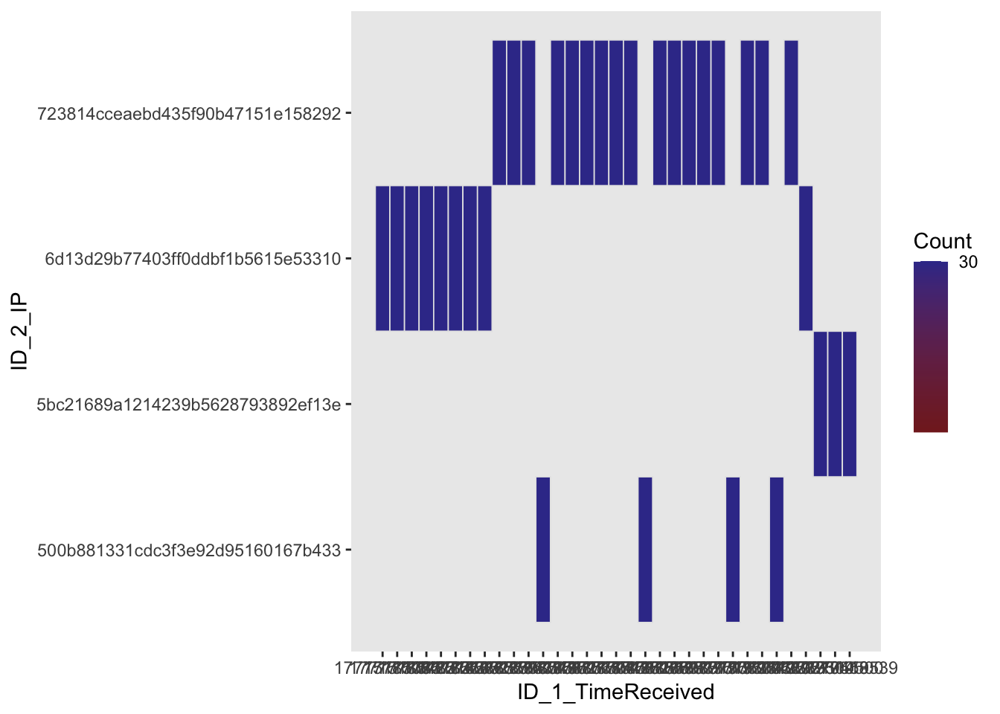
We can see that different participants share the same IP.
Now let’s have a look at the other group.
ezDesign(data_OtherPart_FullData, ID_1_TimeReceived, ID_2_IP)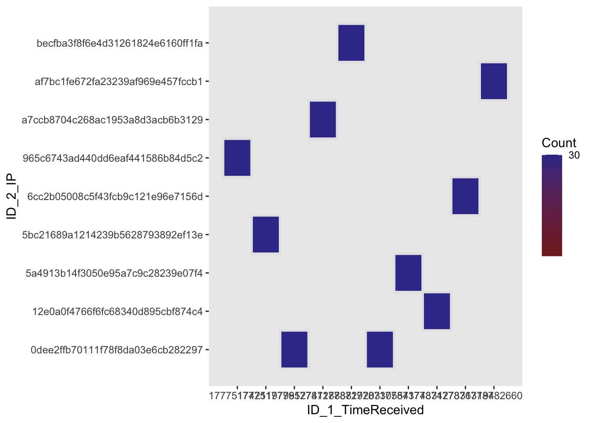
Only two participants share the same IP, but not other ones.
Sometimes, it is useful to inspect specific participants. Here’s the code to do so:
IndPart <- subset(data_OtherPart_FullData,
ID_1_TimeReceived == levels(data_OtherPart_FullData$ID_1_TimeReceived)[9])
plot(IndPart$RT ~ IndPart$Condition)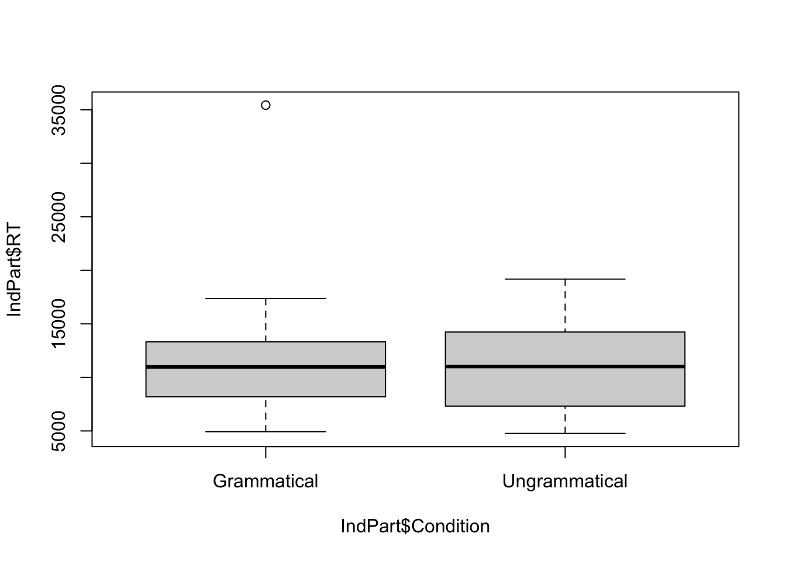
plot(IndPart$Value ~ IndPart$Condition)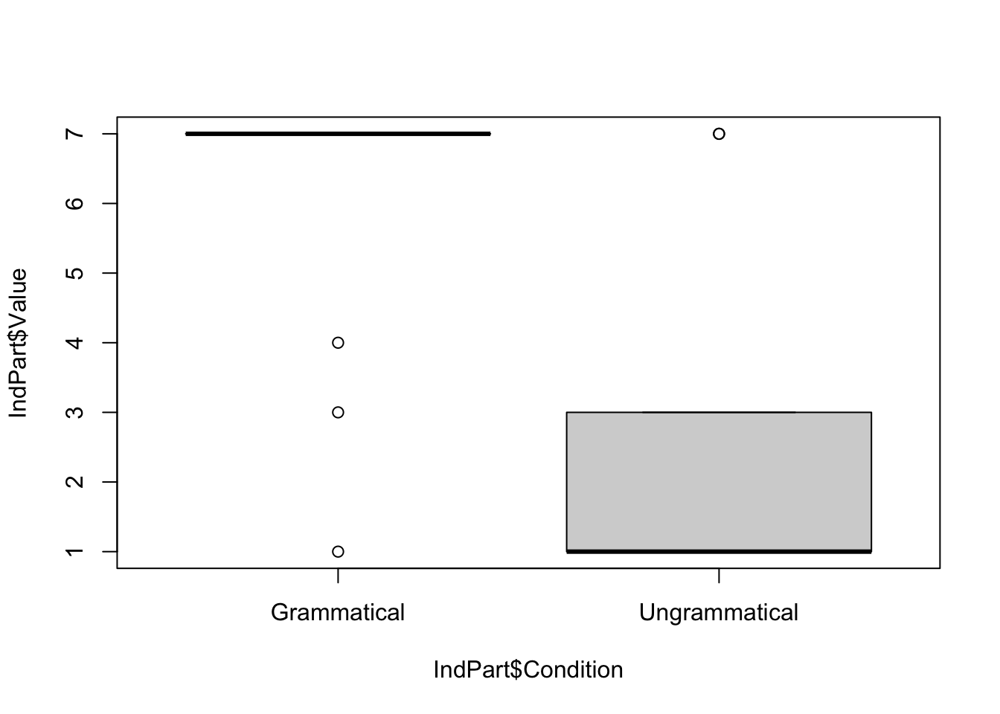
Conclusion
We have converging evidence to say that one group’s behavior is very different. Therefore, the analyses will be conducted on the group of participants whose behavior indicates that they paid attention to the experiment itself.
2.2: Identify and remove non-valid trials
Once we identified and removed data from non-valid participants, we can remove outlier trials. Here is an overview of the process:
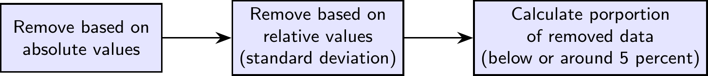
This step means that we want to remove data whose RT is below or above a certain value. There is no absolute rule regarding the value to adopt, and this is very specific to each experiment. In our case, we want to remove trials whose RT is below 200 milliseconds and above 20,000 milliseconds (20 seconds).
data_OtherPart_CleanAbsolute <- subset(data_OtherPart_FullData, RT > 200 & RT < 20000)Removing based on relative values means that we are looking at specific patterns from each participant and from each condition.
In experimental linguistics research, the usual way to go is to look at the mean RT of each condition for each participant, and then we remove trials that are too far from the mean. To do that, we remove trials which are below or above 2.5 times the deviation time from the means.
The following code illustrates how to do that:
# Calculate the mean per Participant and Condition
data_OtherPart_CleanAbsolute$m_rt <- ave(data_OtherPart_CleanAbsolute$RT,
data_OtherPart_CleanAbsolute$ID_1_TimeReceived,
data_OtherPart_CleanAbsolute$Condition,
FUN = mean)
# 2. Calculate the SD per Participant and Condition
data_OtherPart_CleanAbsolute$sd_rt <- ave(data_OtherPart_CleanAbsolute$RT,
data_OtherPart_CleanAbsolute$ID_1_TimeReceived,
data_OtherPart_CleanAbsolute$Condition,
FUN = sd)
# 3. Subset the data to remove outliers
data_OtherPart_CleanAbsoluteRelative <- subset(data_OtherPart_CleanAbsolute,
RT >= (m_rt - 2.5 * sd_rt) &
RT <= (m_rt + 2.5 * sd_rt))Finally, to make sure that we did not remove too many trials.
FullData_NbTrials <- nrow(data_OtherPart_FullData)
TrimmedData_NbTrials <- nrow(data_OtherPart_CleanAbsoluteRelative)
# Number of trimmed trials
NbTrimmedTrials <- FullData_NbTrials - TrimmedData_NbTrials
NbTrimmedTrials[1] 14# Proportion (%)
NbTrimmedTrials*100/FullData_NbTrials[1] 4.666667The proportion is below 5%, which is acceptable in experimental linguistics.
📊 Part 3: Analyses and explorations of the clean results
Now that we have a very clean dataset, we are ready to look at the results of our experiment.
This is a simple experiment, including grammatical and ungrammatical sentences. The ungrammatical sentences were created by placing the negation marker ‘not’ in non-canonical places within the sentence.
Therefore, we may expect that grammatical sentences are accepted, while ungrammatical sentences are rejected.
plot(data_OtherPart_CleanAbsoluteRelative$Value ~ data_OtherPart_CleanAbsoluteRelative$Condition)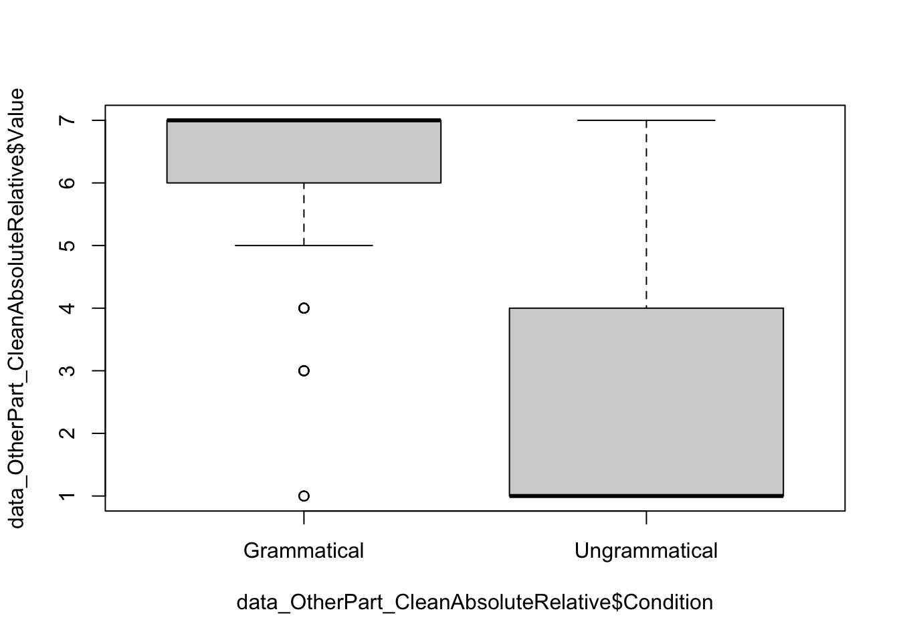
summarySE(data_OtherPart_CleanAbsoluteRelative,
measurevar = "Value",
groupvars = "Condition") Condition N Value sd se ci
1 Grammatical 144 6.361111 1.304168 0.1086807 0.2148283
2 Ungrammatical 142 2.485915 2.041193 0.1712931 0.3386347
Observations
Grammatical condition: The boxplot shows that most of the ratings are above 6, which is expected. There are outliers, but this is very common in experimental linguistics.
Ungrammatical condition: While the low ratings are expected, there are more variations, as suggested by the boxplot and the higher standard deviation (SD).
plot(data_OtherPart_CleanAbsoluteRelative$RT ~ data_OtherPart_CleanAbsoluteRelative$Condition, outline = FALSE)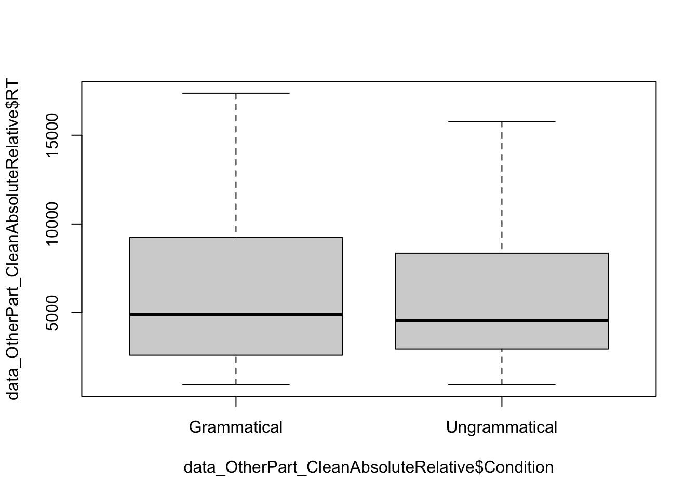
summarySE(data_OtherPart_CleanAbsoluteRelative,
measurevar = "RT",
groupvars = "Condition") Condition N RT sd se ci
1 Grammatical 144 6131.653 4240.087 353.3406 698.4457
2 Ungrammatical 142 6111.190 4277.881 358.9918 709.7022Even after cleaning the data, we can observe the same tendency. The RTs do not greatly differ accross the conditions.
Why exloring the data?
We observed more variation in the ungrammatical condition. The next step is to understand the source of such variation.
We already did our best with the participants, so it is likely to be related to the sentences.
- Let’s first have a closer look at the Grammatical condition:
data_Grammatical <- droplevels(subset(data_OtherPart_CleanAbsoluteRelative,
Condition == "Grammatical"))
plot(data_Grammatical$Value ~ data_Grammatical$ItemNo)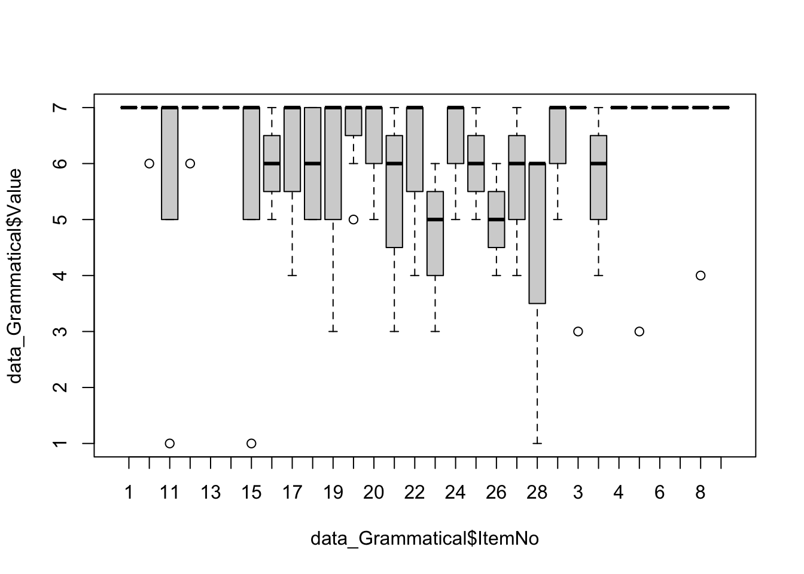
There are two to three sentences with slightly different ratings, but overall the ratings are quite consistent.
- Now let’s look at the Ungrammatical condition:
data_Ungrammatical <- droplevels(subset(data_OtherPart_CleanAbsoluteRelative,
Condition == "Ungrammatical"))
plot(data_Ungrammatical$Value ~ data_Ungrammatical$ItemNo)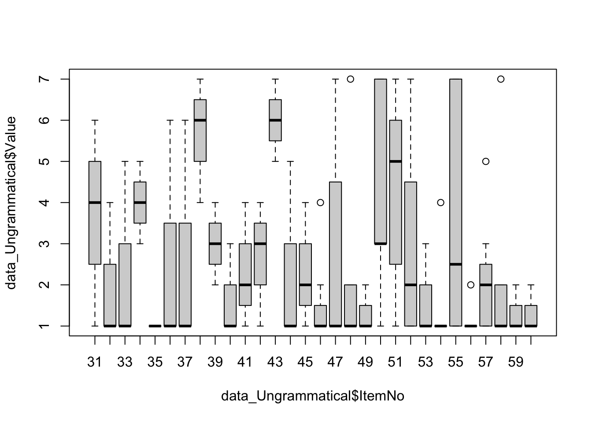
While most of the sentences are rejected, this is not the case for some. This is the source of variation.
It could be tempting to remove them from the analyses, but this is a very bad idea. First, we have no reason to remove them. Second, they provide potentially interesting information. Especially, why are there ratings different?
To answer this question, we need to look even closer at these divergent sentences. Here is the code to do so:
# Exploration of divergent ungrammatical sentences
data_Ungrammatical_OutlierValue <- subset(data_Ungrammatical, Value > 4)
data_Ungrammatical_OutlierValue_Summary <- droplevels(subset(data_Ungrammatical_OutlierValue,
select = c(ID_1_TimeReceived,
ItemNo,
Sentence)))
data_Ungrammatical_OutlierValue_Summary <- unique(data_Ungrammatical_OutlierValue_Summary)
data_Ungrammatical_OutlierValue_Overview <- table(data_Ungrammatical_OutlierValue_Summary$ItemNo)
data_Ungrammatical_OutlierValue_Overview
31 33 34 36 37 38 43 44 47 48 50 51 52 55 57 58
1 1 1 1 1 2 3 1 2 1 2 4 2 2 1 1 The numbers in the upper row indicate the ID of the sentences. The numbers in the lower row correspond to the number of participants who gave a rating higher than 4.
For many outliers, only one participant gave a rating. This means that we should recruit more participants to make sure that the patterns is really stable. For the moment, we can focus on the sentences who received higher ratings by more than two participants. Here is the code:
# Identify which ungrammatical sentences
data_Ungrammatical_OutlierValue_Overview <- as.data.frame(data_Ungrammatical_OutlierValue_Overview)
names(data_Ungrammatical_OutlierValue_Overview)[1] <- "ItemNo"
data_Ungrammatical_OutlierValue_Overview <- droplevels(subset(data_Ungrammatical_OutlierValue_Overview, Freq > 2))
data_Ungrammatical_OutlierValue_Overview <- left_join(data_Ungrammatical_OutlierValue_Overview,
data_Ungrammatical,
by = "ItemNo")
OutlierUngrammaticalSentences <- unique(data_Ungrammatical_OutlierValue_Overview$Sentence)
OutlierUngrammaticalSentences[1] The bus stops not at this corner anymore
[2] It matters not what they think of us
30 Levels: He needs not help with his homework today ...Now it is the role of the linguist to analyze what is happening with these particular sentences!
📝 Assignment for next week
Please complete the following tasks before our next meeting: